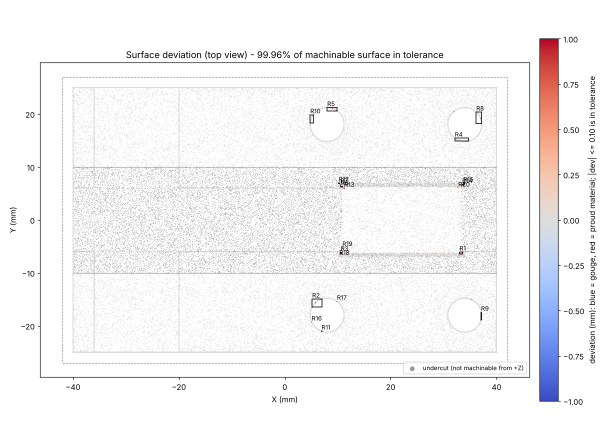

Iteration 2
validevaluated2026-11-19 23:15:4099.957%+0.08 pts
- gouge
- 0.00%
- proud
- 0.04%
- max gouge
- 0.00 mm
- errors
- 0
- warnings
- 1
- cycle
- 12.6 min
- lines / moves
- 1825 / 10303

Iter 2: fixed rapid into 0.25 mm wall stock at line 220 (feed down instead); added T8 1 mm ball z-level corner cleanup of the 4 drafted-pocket corners (T4 r0.75 left ~0.3 mm there).